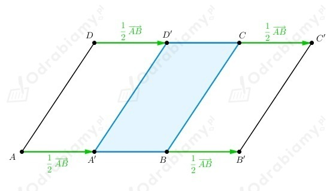
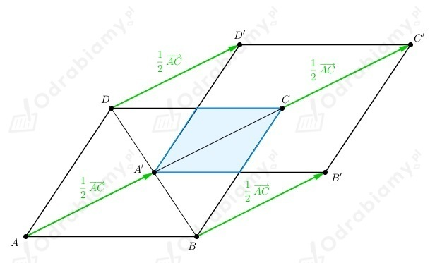
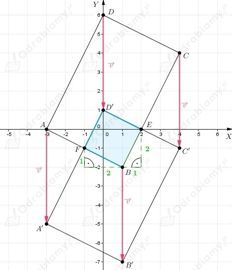
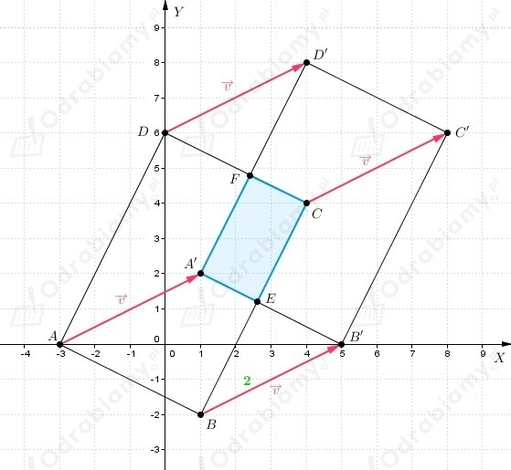
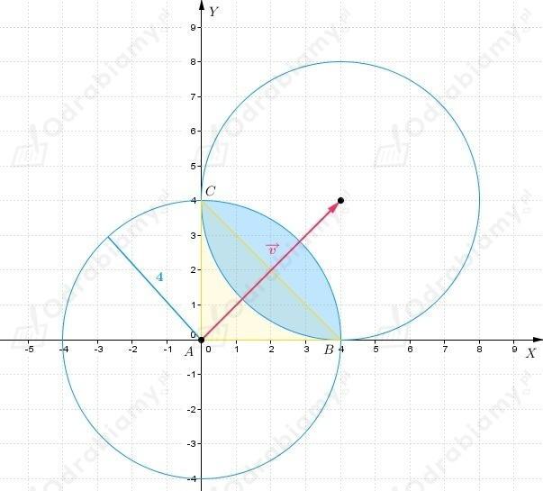

Z treści zadania wiemy, że
Przesuwamy wierzchołki rombu ABCD o wektor i otrzymujemy romb A'B'C'D'.
a)
Wektor przesunięcia

Część wspólna obu rombów, to romb, którego podstawą jest połowa boku AB.
Zatem
b)
Wektor przesunięcia

Część wspólna obu rombów, to romb, którego podstawą jest połowa boku AB, a wysokość to połowa
wysokości rombu ABCD.
Zatem
a)
Wiemy, że
Przyjmijmy oznaczenia jak na rysunku poniżej
Częścią wspólna prostokąta ABCD oraz prostokąta A'B'C'D' jest kwadrat A'B'CD.
Wyznaczamy długość boku kwadratu A'B'CD.
Obliczamy pole kwadratu A'B'CD
b)
Wiemy, że
Przyjmijmy oznaczenia jak na rysunku poniżej

Częścią wspólna prostokąta ABCD oraz prostokąta A'B'C'D' jest kwadrat BED'F.
Wyznaczamy długość boku BE kwadratu BED'F.
Obliczamy pole kwadratu BED'F
c)
Wiemy, że
Przyjmijmy oznaczenia jak na rysunku poniżej

Częścią wspólna prostokąta ABCD oraz prostokąta A'B'C'D' jest prostokąt A'ECF.
Wyznaczamy równanie prostej A'B'
Wyznaczamy równanie prostej CB
Wyznaczamy współrzędne punktu E (punktu przecięcia prostych A'B' i CB)
zatem
Dostajemy
Wyznaczamy długości boków prostokąta A'ECF.
Obliczamy pole prostokąta A'ECF
Wiemy, że koło K1 ma środek w punkcie (0, 0) oraz promień r=4.
Koło K2 powstaje w przesunięciu koła K1 o wektor
Przyjmijmy oznaczenia jak na rysunku poniżej

Zauważamy, że
oraz
Dodajemy powyższe równości stronami i dostajemy
Wiemy, że
więc dostajemy
Wektory
są równoległe i mają tez sam zwrot, zatem
oraz
co kończy dowód.